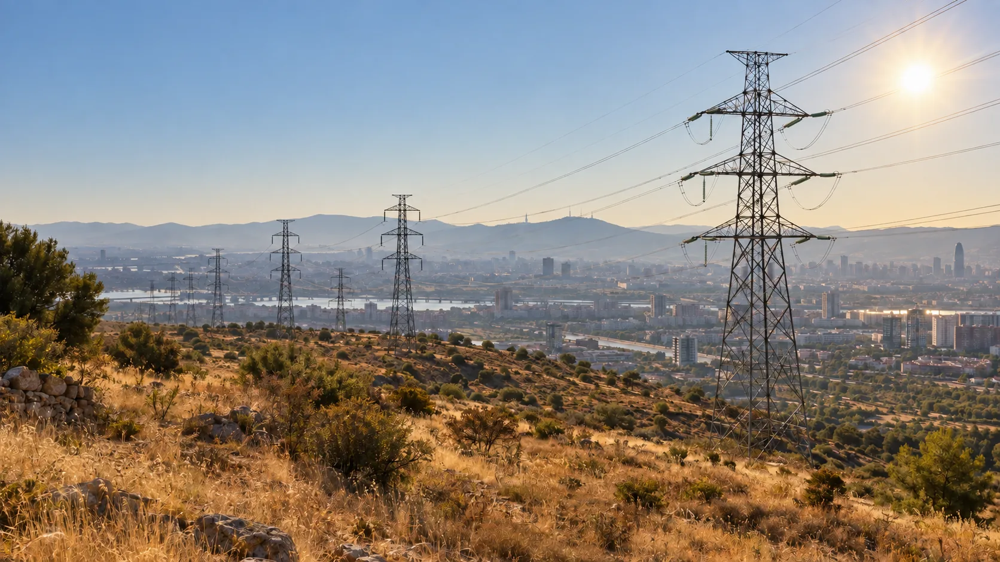
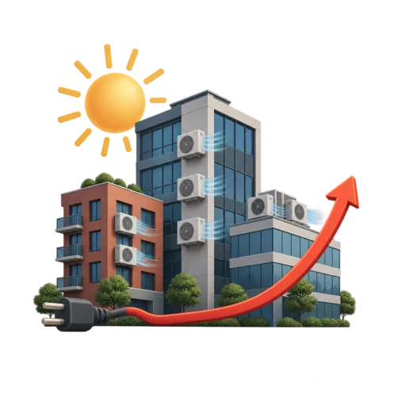
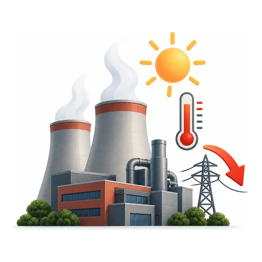
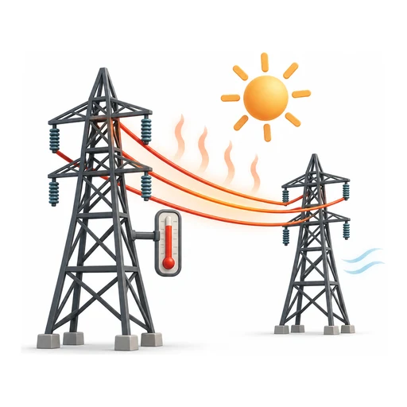
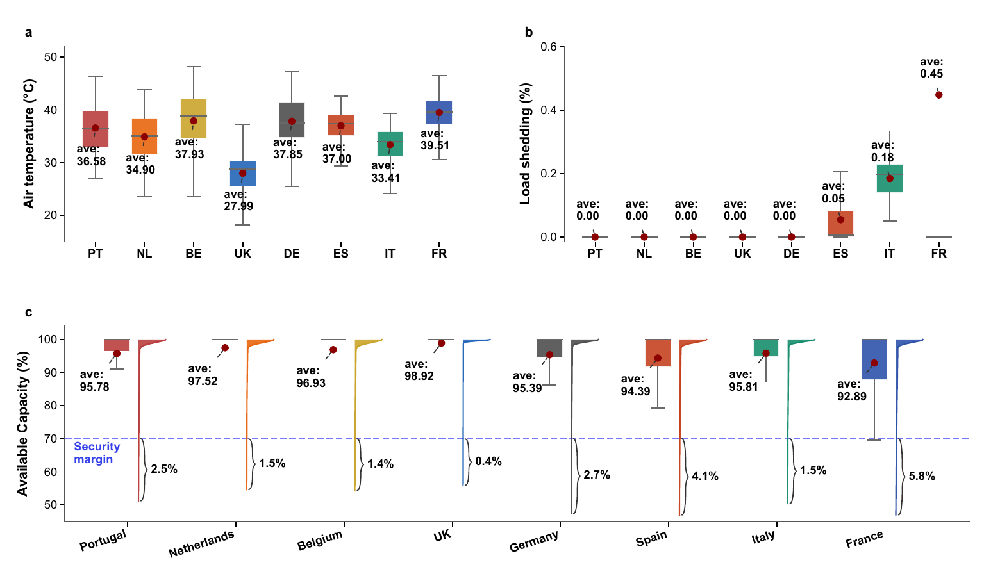
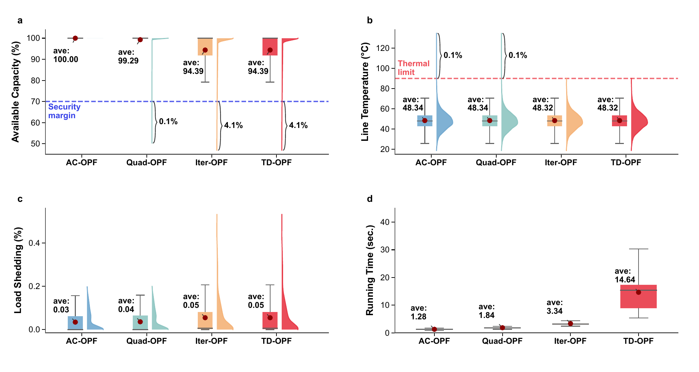

Europe's warming rate
Since the 1980s, Europe has warmed at more than twice the global average rate.
WMO climate assessment
Extreme heat can increase electricity demand, change power-plant output and limit how much power transmission lines can carry. HEAT-Analysis examines how these effects interact and where they create bottlenecks in European grid models.
The study estimates near-term stress in grid models built from public data, rather than predicting outages in individual countries.
AI-generated editorial illustration, shown for context rather than as a record of an outage.
Why this matters
Recent European heatwaves have brought widespread heat stress and a substantial health burden. Electricity networks must also operate through these conditions.
Since the 1980s, Europe has warmed at more than twice the global average rate.
WMO climate assessmentOn 17 July 2024, one fifth of European land reached at least strong heat stress.
Copernicus ESOTC 2024A peer-reviewed study estimated this toll across 35 European countries in summer 2022.
Nature Medicine studyFor electricity systems, heat can raise demand just as generation and transmission capacity become constrained.
The problem
Electricity supply depends on both available generation and the network's ability to deliver it. A heat-related constraint on a transmission line can therefore matter even when power is available elsewhere.

More air conditioning increases the amount of electricity that must reach homes and businesses.

Some thermal power plants lose available output as the air warms, while wind and solar production respond to the accompanying weather.

Air temperature, sunshine and wind alter conductor heating and therefore the current that a route can carry within the modelled temperature limit.
The framework
For each projected heatwave hour, the model tests whether the represented grid can meet demand under the corresponding weather conditions.
Method in brief
The hourly patterns of selected ERA5 heat events from 2019, 2022 and 2024 are transferred to bias-corrected C3S/CORDEX climate baselines for 2026–2030 under RCP 4.5.
Each weather realisation determines electricity demand, renewable production, temperature-related generator availability and heating along individual line segments.
An alternating-current optimisation balances generation and power delivery within the represented operating and thermal limits. Demand that cannot be met is recorded as load shedding.
What the simulations show
Applying the framework to eight country-level grid representations reveals different patterns of stress. Each is evaluated over 480 projected heatwave hours, accounting for differences in weather, network structure, generation, demand and storage.

The represented French, Spanish and Italian systems show higher load-shedding risk. The German and UK models, together with several northern counterparts, remain less affected under the tested conditions.
Links to neighbouring systems provide relief only when those systems retain spare power and the connecting routes can deliver it to the constrained area.
In the Spanish analysis, higher base demand increases load shedding. The storage comparison varies only the initial charge of the represented fleet; future storage locations and capacity could produce different outcomes.
Spain: comparing methods
The differences between grids raise a further question: how much does the choice of model affect the bottlenecks we identify? The Spanish case compares four approaches using the same 480 projected heatwave hours.
AC-OPF uses fixed transmission limits, while Quad-OPF approximates their temperature dependence. Iter-OPF is the study's two-update method; TD-OPF continues the temperature-dependent calculation until the results stabilise, providing a convergence reference.

In this comparison, AC-OPF and Quad-OPF yield less load shedding but allow some lines to exceed the modelled 90°C thermal limit. Iter-OPF captures the additional constraints and closely matches the TD-OPF reference, with a shorter running time. The important difference lies in local thermal bottlenecks, even though average line temperatures are similar.
Explore one solved hour
The comparison above summarises many heatwave hours. Here, one saved example brings the weather and network into view: 13:00 on 24 July 2030 in the represented Spanish grid.
Illustrative 2030 snapshot under the represented grid configuration; not a forecast of an outage. Weather fields come from the bundled Spain 2030 worked example. Solved results match Extended Data Fig. 2 Source Data, and installed capacities come from the SI Spanish grid example in the figure source packages.
What the results mean
Load shedding marks demand that the model cannot serve under the specified weather, infrastructure and operating constraints. Its location and extent help identify bottlenecks and explain how heat affects power delivery. These are conditional stress-test results, not predictions of national outages.
Network upgrades, new generation and storage, and operational measures could change the results. With more detailed grid and cost data, the framework could compare adaptation options such as demand response, transmission reinforcement, targeted storage and cross-border support.
Reproducible examples
Three short examples follow the same Spanish 2030 heatwave hour, from weather inputs through grid operation. The final notebook runs a single OPF using the bundled inputs.
Notebook 01
Inspect hourly air temperature, wind and sunlight across the selected 2030 day.
View on GitHubNotebook 02
See the modelled demand profile, generator availability and weather-dependent line limits.
View on GitHubNotebook 03
Run one temperature-dependent OPF and compare its result with the saved map.
View on GitHub